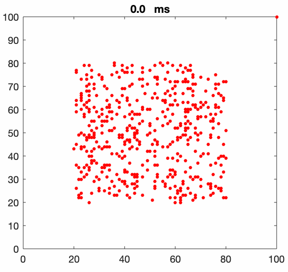
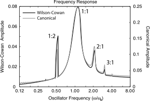
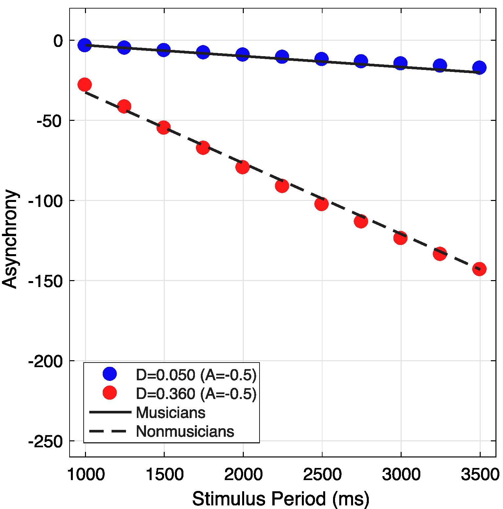
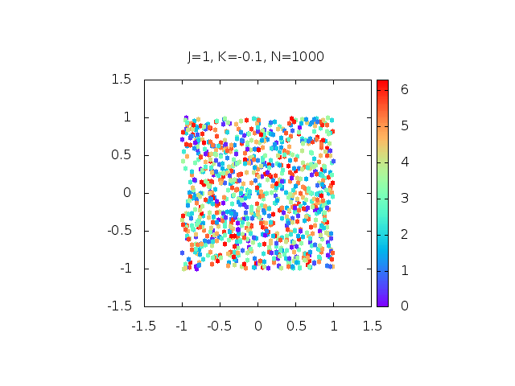

The purpose of this document is to cover a literature review for the "Special Syllabus" by Julian Fuhrer with the topic of oscillatory dynamics in the brain and its possible transfer to applications.
Sensory processing in the brain is more and more regarded as an inference problem where anticipation or prediction of an event plays a key role. An event in general can be anticipated in terms of its features (content), location (space) or moment (time) of occurrence.
This syllabus treats the temporal dimension by considering temporal prediction mechanisms of the brain and its modelling through dynamical systems. Concretely, prediction mechanisms underlying auditory perception are examined, with the focus being on modelling and simulating of such, based on cortical oscillations. Through presenting selected articles, first the topic of cortical oscillatory dynamics with a focus on its role in temporal predictions is outlined. Subsequently, its mathematical modelling through dynamical systems is treated and lastly its possible transfer to applications is considered.
The structure of each article description will consist of a short summary, a couple of sentences, before a larger review summarising the main points and take-aways from the articles follows. There, I will also try to state which students could find purpose in reading the article at hand and how this choice of article connects the respective topic.
Notice, all article headers, except the table-of-contents, should be a link to the article in question.
The first topic regards neural oscillation and its role in temporal predictions. Hence, in this section more neuroscience inclined articles are presented. These articles aim for a connection between how the brain anticipates an event and neural oscillation. That is to say, how predictive timing is connected to different frequency bands of cortical oscillations.
Theories of perception are anchored in the central notion that the brain continuously updates an internal model of the world to infer the probable causes of sensory events. In this framework, the brain not only needs to predict the causes of sensory input, but also when they are most likely to happen. We review [here] the neurophysiological bases of sensory predictions of ‘what' and ‘when', with an emphasis on low-level oscillatory mechanisms. We argue that neural rhythms offer distinct and adapted computational solutions to predicting ‘what' is going to happen in the sensory environment and ‘when'.
This article treats theories of perception and its underlying mechanisms. Prediction is assumed to be a core principle of perception and thus the authors examine prediction mechanisms of "what" and subsequently of "when" something is going to happen. Here, different concepts of cognition are introduced and cortical or neural oscillation is regarded as a common basis for both the temporal and the contentual framework. By doing so, several illustrative examples of speech communication are demonstrated where also neural oscillation itself is introduced.
Starting with a general introduction regarding cortical oscillations and sensory predictive mechanisms, predictive timing is reviewed in terms of different frequency bands. Here, principles such as phase reset or phase locking of low frequency oscillations are displayed. In the same manner, subsequently, predicting "what" is treated. Between this structure are boxes explaining different ideas such as top-down modulation by attention and expectation or active inference by motor systems in predictive timing. In last section, both considerations are combined into the oscillatory framework and made plausible by the example of speech processing.
Overall the article is a highly recommended read. Any student interested in learning principles about perception and its mechanisms should read this article. It is rather compressed in its writing, but provided one spends time on it, it yields valuable information regarding possible mechanisms in the brain which facilitate not only temporal predictions, but also enable predicting what is going to happen. The most important is that the authors connect such predictions with neural oscillation and by doing so they find a common framework of both.
Neuronal oscillations are comprised of rhythmic fluctuations of excitability that are synchronised in ensembles of neurons and thus function as temporal filters that dynamically organise sensory processing. When perception relies on anticipatory mechanisms, ongoing oscillations also provide a neurophysiological substrate for temporal prediction. In this article, we review evidence for this account with a focus on auditory perception. We argue that such "oscillatory temporal predictions" can selectively amplify neuronal sensitivity to inputs that occur in a predicted, task-relevant rhythm and optimise temporal selection.
Despite its rather short length, this publication treats a variety of aspects of temporal predictions and states that low-frequency neuronal oscillations are the hypothesised substrate of temporal predictions. Especially interesting, the authors treat the role of motor systems in perceptual tasks and highlight the speciality of the auditory modality as humans are not able to selectively move their ears as opposed to most sensory modalities.
After a compact introduction to perception and its thought underlying prediction mechanism, the authors address temporal prediction in the example of speech processing as "together with music, [it] is arguably the most interesting stimulus to study the role of neuronal oscillations in perception. [It] arises from the dynamic sampling of acoustic information at multiple time scales simultaneously, referred to as multiplexing." Here, they put forward how different frequency bands take part in processing different aspects at different time scales. Subsequently, the motor origin of temporal predictions is treated. Here they argue that the motor system may be conceptualised as a purely predictive system, generating top-down predictions that shape perception and that it may drive temporal expectations through slow oscillatory dynamics. Then, they treat the term of active sensing which is the involvement of sensorimotor loops in perception or how perception is shaped by the motor system and its possible existence in the auditory domain. In general, the motor system first structures the content of bottom-up sensory information inflow as it directs sensing organs toward relevant stimuli. Second, it is stated that the motor system modulates the processing of sensory information via sending copies of movement commands to associated sensory structures (top-down discharge signals). This predictively modulates sensory processing according to the temporal (and spatial) patterns of motor activity patterns, thus providing "when" (and "where") predictions at a minimum. The authors proceed then to comment on active sensing in the auditory domain and its relative bottom-up disconnection from the motor system. As opposed to the fact that "bottom-up and top-down motor influences begin contingent in most sensory modalities, audition is the exception because we cannot selectively move our ears. However, sensitivity to temporal information is at its best in the auditory modality, and music exemplifies the strong relationship existing between rhythm and auditory and motor systems." Before the final section, the authors rather quickly present the design and conduction of an experiment aiming to examine auditory active sensing further with the result that
This article is highly recommended to read as it treats various different concepts of temporal prediction and displays how essential rhythmic oscillations are for this process. For a reader not that familiar with signal processing in the brain, it can get difficult at some paragraphs to understand precisely what is meant. Yet, the authors put forward numerous examples making it possible to follow up. The section where the authors present their experiment is rather short, the same with conclusion and summary as if necessary space was not available.
So far articles have been presented treating prediction mechanisms and the role of neural oscillations and the motor system. In this section modelling and simulation of such are considered. Here, a focus is on the research of Edward W. Large and his Music Dynamics Laboratory which postulates a model called gradient frequency neural network.
In this paper, we summarise current knowledge about the synchronisation of neural rhythms to musical rhythms and outline a neurodynamic model of pulse perception based on entrainment of neural oscillation. First, in §2, we present a brief overview of the main theories and experimental findings related to musical pulse and meter. We discuss the potential function of neural oscillations in establishing the perceived temporal structure of complex musical rhythms. In §3, we sketch a neurodynamic model of pulse perception based on the interaction between oscillatory neural networks. The model incorporates the basic findings of the past 20 or so years and makes a key prediction about the formation of the pulse percept. In §4, we evaluate the fundamental prediction of the theory, that perceived temporal structures may correspond to frequencies that are not physically present in the amplitude envelope. This model provides a theoretical link between oscillatory neurodynamics and the induction of pulse and meter in musical rhythm.
This article displays knowledge from different research areas which is then incorporated into a simulation model. First, music theoretical basics are demonstrated. Based on the Neural Resonance Theory and findings about the synchronisation of neural rhythm to musical rhythm, these basics are subsequently conflated with neural oscillatory dynamics. Here, as articles, also the role of the motor system in auditory perception is addressed. The authors highlight neural entrainment to the musical rhythm and how broadly distributed motor systems are involved in pulse and metre perception, enabling coordination of perception and rhythmic movements with musical rhythms. After quickly introducing their canonical gradient frequency neural oscillator network, this model is employed for simulating auditory-motor coupling within the brain. The model can capture interacting oscillatory dynamics in sensory and motor networks, where a rhythm is input to a sensory network, and sensory and motor networks are reciprocally connected, providing input to one another. The sensory network is intended to capture auditory cortical entrainment, while the motor network is intended to capture the dynamics of a broadly distributed network including basal ganglia and cortical areas. The setup can be seen in following video from Oscilloscape™. The fundamental prediction of this model setup is that pulse is perceived in rhythms with no energy in the amplitude envelope of the acoustic rhythm at the pulse frequency. To further examine this prediction, the authors performed then a tapping study, where the result shows that participants perceive the pulse at the theoretically predicted frequency.
The article itself is highly recommended to read. The authors utilise nonlinear dynamical systems and try to model a highly complex and intricate circuitry. That intention is highly challenging and their systems approach seems to be unique. At the same time, the model is self-organising, that is it may lack some abstract areas which take the part to make abstract predictions. Also, the choice of the parameter values seems to be somehow not explained enough in this article. The tapping experiment seems to be not fully convincing, as they instructed participants to find the beat by tapping along to it. That is they use their attention to find the beat and as no neuronal signals are recorded, it is difficult to say what in the end is the cause of this effect of tapping along a beat that is not present in the actual physical amplitude envelope.
We derive a canonical model for gradient frequency neural networks capable of processing time-varying external stimuli. First, we employ normal form theory to derive a fully expanded model of neural oscillation. Next, we generalise from the single oscillator model to heterogeneous frequency networks with an external input. Finally, we define the gradient frequency neural network and illustrate nonlinear time-frequency transformation of a time-varying external stimulus.
In order to get more of an idea of what is behind the term gradient frequency neural network (GFNN), this article is good to read. Starting with the introduction of single oscillatory dynamics and how it is based a natural frequency. Any frequencies in the stimulus that resonate with the natural frequency will have significant effects on the oscillator's dynamics. Based on this dynamics, the authors employ Poincaré-Dulac Normal Form Theory to transfer it to a canonical form. This form then is expected to be topologically equivalent to the local dynamics of the original neural network.
The last section, considers a model of nonlinear signal processing based on 1-dimensional networks of nonlinear oscillators. Each oscillator is tuned to different natural frequencies. Such networks are conceptually similar to banks of band-pass filters. The oscillators are organised by their natural frequency, from the lowest to the highest, and stimulated with a time-varying acoustic signal, therefore the name gradient frequency neural oscillator network (GFNN). Here, the authors compare their canonical model of neural oscillators with the well established model of Wilson-Cowan oscillators under the influence of a sinusoidal input where the response amplitude for the Wilson–Cowan model (black line) and the canonical model (gray line) is depicted below. Each network consists of 360 oscillators arrayed along a logarithmic frequency gradient of 6 octaves with 60 oscillators per octave. With a Pearson-correlation-coefficient of $r^2 = 0.946$, the average amplitudes are highly correlated.
The article presents quite some equations without offering a illustration of the dynamics itself. In the end, the comparison of their canonical GFNN to Wilson-Cowan GFNN seems a bit short. Also the fact that to that point no proper validation or proof was stated, reduces the articles use to solely provide mathematical equations of how the network is derived.
Here, a model of meter perception is proposed in which a musical stimulus provides input to a pattern-forming dynamical system. Under rhythmic stimulation, the system undergoes bifurcations that correspond to the birth of self-sustained oscillations and the formation of temporally structured patterns of oscillations. The resulting patterns dynamically embody the perception of beat and meter, and they are stable in the sense that they can persist in the face of rhythmic conflict. The performance of the model is compared with the results of a recent beat induction study
How do we synchronise our movements to music? This is the core question Edward W. Large takes into consideration in this article. Combining his thoughts with modelling approaches and empirical findings, he proposes a systems approach to simulate human beat induction or perception of complex auditory stimuli such as music. He then deploys the emerging simulation model in a comparison with results of a tapping task.
After an introduction, he starts with illustrating the basic concepts of rhythm, beat and metre stating that "a rhythm is a temporal pattern that can give rise to perceptions of beat and meter. Beat is a psychological pulse that functions as a stable expectation: Once established, it tends to continue "in the mind and musculature of the listener", even when the rhythm stops or temporarily comes into conflict with the pulse series". Then, he addresses the proposed approach of meter perception, treating it as an "active, anticipatory mode of rhythm perception". This approach is based on three key principles, where the first captures the prior definition of beat ("in the mind and musculature of the listener") by stating "perception of musical beat is most appropriately modelled as an active, self-sustained oscillation". The second principle is about the modelling of perception of musical metre as a network of oscillators that are coupled to one another, "whose structure reflects both the temporal structure of the input as well as internal dynamic constraints". The third principle is about the entrainment and (temporal) prediction of a future event. There, he sates: "when driven with a complex external rhythm, the oscillators of the network should entrain to different periodicities within the temporal pattern. The entrainment of oscillators at multiple time scales provides the listener with a framework that shapes expectations about future events". The model of one such oscillator itself is based on a dynamical system in normal form, more precisely it is a self-sustained oscillation described by a normal form for the Hopf bifurcation. In a network of oscillators, an oscillator $i$ can be defined in polar coordinates $(r_\mathrm{i}, \varphi_\mathrm{i})$ as $$ \begin{align} \dot{r}_\mathrm{i} &= r_\mathrm{i} (\alpha_\mathrm{i}-r_\mathrm{i}^2) - \sum_{m\neq i} \gamma_\mathrm{mi} r_\mathrm{i} r^2_\mathrm{m} \\ \dot{\varphi}_\mathrm{i} &= \omega_\mathrm{i} \end{align} \label{can_osc}\tag{1}$$ with the first term being internal dynamics with energy parameter $\alpha_\mathrm{i}$ and the system's eigenfrequency $\omega_\mathrm{i}$. The value of the energy parameter determines which behaviour is observed. This can be further examined by looking for the steady states of the system (i.e. $ \dot{r}_\mathrm{i} = 0$). Neglecting the second term of the euqation above, as depicted in the figure below for $\alpha_\mathrm{i}<0$, the system has a stable fixed point with $r_\mathrm{i} = 0$ and behaves as a damped oscillator. For parameter values $\alpha_\mathrm{i} \geq 0$, a stable limit cycle develops with amplitude $r_\mathrm{i} = \pm \sqrt{\alpha}$ and the system generates a sustained oscillation. Sustained oscillation, again, is the basic model of the internal pulse or musical beat.
The second term is an interaction term. It runs over all oscillators in the network with inhibition parameters $\gamma_\mathrm{mi} \geq 0$. The idea here is that the oscillators compete for activation through mutual inhibition. Oscillators most consonant with the input should tend to deactivate those that do a poorer job of correlating with the incoming rhythm. Thus, in response to a rhythmic input signal, only a few oscillators should remain active – those that best reflect the temporal structure of the rhythm. Aside from an interaction term, Edward W. Large also includes an external input and Gaussian white noise to simulate variability in human behaviour, where both additional terms contribute in both amplitude and phase. Hence, the proposed systems consists of a network of Hopf oscillators, driven by a musical stimulus. Under rhythmic stimulation, this pattern-forming dynamical system undergoes bifurcations that correspond to the birth of self-sustained oscillations and the formation of temporally structured patterns of oscillations, modelling the perception of temporal structure.
After considering the choice of parameters of the model and how to parse an audio signal to be an input for the model, the author focuses on an experimental study where the model is applied. In this study, the stimuli consisted of eight ragtime piano pieces. They were presented in four versions each: full pitched, full monotonic, RH pitched, and RH monotonic. That is, 32 separate stimuli were acting as an input. The different versions controlled the amount of syncopation and pitch information available in the input. From the simulation study it is concluded that "network performance deteriorated similarly to human performance as stimulus information degraded. For both the model and for the musicians, increased syncopation was more disruptive to synchronisation than lack of pitch information. Thus, this preliminary test provides initial support for the model, and also suggests promising areas for future research". Furthermore, he states "as people listen to musical rhythms, a stable multi-periodicity pattern arises psychologically, serving as a dynamic embodiment of the temporal structure of the rhythm. In the simplest case, a single periodicity is used to guide tapping along with rhythms. In other situations, more complex metrical patterns may be engaged for synchronisation of intricate movements such as in dance. Ultimately, this form of musical behaviour speaks to the deep interdependence of action and perception."
This article is great to read as the density of the content is rather low. Also the author makes an effort to explain and elaborate his thoughts properly. Around beat or metre perception, a lot of information is given making it worthwhile to read or at least look into.
Phenomena like the anticipation tendency can be explained by delay-coupled systems, which may be inherent to the sensorimotor system during perception-action coordination. We hypothesise that the tendency to anticipate is the result of delayed communication between neurons. Here we tested whether a dynamical systems model based on this hypothesis reproduces observed patterns of human synchronisation. We simulated behaviour with a model consisting of an oscillator receiving its own delayed activity as input. Three simulation experiments were conducted using previously-published behavioural data from 1) simple tapping, 2) two-person alternating beat-tapping, and 3) two-person alternating rhythm-clapping in the presence of a range of constant auditory transmission latencies. [...] Overall, our model explains various anticipatory behaviours, and has potential to inform theories of adaptive human synchronisation.
The authors start with introducing the term "perception-action coordination" as in walking, talking or dancing, rowing, or music making that results in synchronisation with external information, shared among a group of individuals. This coordination is also termed as sensorimotor synchronisation, as it is considered to depend on communication between the sensory and motor areas of the nervous system. Then, they focus on individuals tap in synchrony with an isochronous stimulus as it is the "simplest form of synchronisation". In dependence on the duration of the inter-onset-intervals (IOIs), humans tend to precede/anticipate or follow the stimuli. If the IOI is between 0.3 and 4.8 s humans tend to tap before the stimulus onset. However, the asynchronies vary widely and can be positive, on average, for an individual tapping with IOIs longer than 2 s. Hence, asynchronies may show a bimodal distribution for IOIs greater than 2 s. When the IOI is greater than 5 s, more taps occur after the stimulus than before the stimulus, suggesting that people are more reactive upon hearing the next beat. Here it is noted that the anticipation tendency not only depends the IOI, but also on the expertise level, complexity of the rhythms and the task requirements. It is then put forward that the anticipation results from the combination of information from different modalities, based on differences in the axonal distances between the hand, the ear and the brain. Different models exist trying to explain this effect, as for example the sensory accumulation model. Yet, these models fail to explain all aspects of this anticipation tendency in tapping such that the authors introduce the "more generalised anticipatory behaviour" model after Dubois going beyond the simple anticipatory phenomena. The two main theories as to how anticipatory behaviour arises are the "weak" or "strong anticipation theory". The former proposes that anticipation occurs as the result of inferences produced by internal models. The latter suggests that anticipation results from the homeostatic coupling of information between an organism and its environment. In this article, they chose to explore how the strong anticipation theory could further explain various results in rhythmic coordination in an integrative manner, including anticipatory synchronisation, by conducting computational simulation. The reasons for which seems somehow not fully clear or convincing such that I commented on it in the last paragraph of this summary.
After stating the basics of their approach and its aim, they address how a dynamical system is able to provide information regarding "anticipatory synchronisation". In strong anticipation theory, such synchronisation emerges from the coupling between a response system and a driver system (e.g., stimulus input), where the response system also receives delayed feedback about its own activity. Furthermore, there are parallels between a dynamical system with delayed feedback and the delayed communication between different areas in the sensorimotor system of humans carrying out synchronisation. This is due to the fact that synchronisation requires communication between auditory, premotor and motor brain areas, which involves delayed transmission of neural information. These facts may be captured by coupled dynamical systems with delayed feedback inputs such that a "low-dimensional dynamical systems model could explain anticipation in perception-action coordination". The authors employ the model after Edward W. Large as a dynamical system to examine whether this prior statement holds true. In contrast to Large and colleagues, they employ the canonical oscillator of Equation \ref{can_osc} without interaction term such that their model setup consists of a single oscillator. Instead of the interaction term, they add delayed recurrent feedback to this single oscillator in order to simulate periodic synchronisation. That is, in addition the input $$ u= F - \frac{D}{f}z(t-\tau) $$ is added, where $F$ being the external stimuli, and the second term the time delayed feedback of oscillator state $z$. The authors state the computations by this oscillator to b neuroscientifically inspired: It receives an input $z$, thus encoding and perceiving an external stimulus. It also receives its own delayed activity with amplitude $D$ and a delay of $\tau$, simulating the delayed communication in the nervous system between basal-ganglia, cerebellum, premotor cortices, motor cortices, and peripheral muscles at extremities and effectors (e.g., fingers), which are inherent in the perception-action cycles. The value of the variable $f$, is selected to match the frequency $f_{s}$ of a periodic external stimulus. They refer to this model as the Strong Anticipation in Periodic Perception Action (SAPPA) with the code being here and apply it to three simulation experiments. The first simulation experiment concerns the task of tapping to an isochronous stimuli. As shown in the figure below, the model was able to reproduce the mean anticipatory dynamics of musicians and non-musicians tapping with IOI periods between 1 to 3.5 s.
The black lines origin from experimental recording and the blue and red dots emerge from the simulation model. In the conclusion the authors state that the "model was able to capture the behavioural patterns and effects observed across all studies, [...] making it a tool for the prediction of ecologically-valid anticipation in experiment. Moreover, it is stated that their model "could aid technologies that assist synchronised action-making in teletherapy with transmission latencies (TLs). A better theoretical understanding about how TLs and anticipation interact could lead to a system that dynamically calibrates TLs to help synchronisation between humans interacting over the internet. Additionally, knowing how an individual's neural delays affect synchronisation could serve as a biomarker for rehabilitation in personalised medicine. Finally, our model could be used to improve telecommunications for synchronised action and have implications in other fields like network music performance and robotics."
Overall, the article is well written and good to follow. Interestingly, Edward W. Large declares a competing financial interest as CEO of Oscilloscape. Regarding their motivation on page 3 to focus on the "strong anticipation theory" after Dubois, I cannot fully understand when looking for explanation approaches for "more generalised anticipatory behaviour" that they somehow are not addressing the idea of predictive processing. This idea is somewhat very well known and widely spread and the core of the whole theory is anticipation or prediction. I am missing the fact that it is not mentioned here. Also, the reasoning that the "weak anticipation theory" which is based on inference of an internal model cannot explain anticipation of systems that do not carry out inference such as laser semiconductors or electronic circuits, seems somehow odd for me. First, the authors are not displaying how such systems anticipate, making it hard for the reader to follow this argument. Second, to compare a purely optical or electrical systems with the human mind seems not that convincing for me. Of course, the brain might have different and more complex underlying mechanisms when it comes to anticipation than a "simple" electrical circuit (which the brain mainly consists of). Therefore, it is rather likely that a theory of human perception or anticipation is not able to predict or explain anticipation of all physical systems that possibly exists. I reckon it is even rather challenging to propose a theory that is able to explain human anticipation in all aspects and modalities such that this whole reasoning for deciding to choose the "strong anticipation theory" as the "better" theory seems not convincing for me. It may have been better to just state that the authors want to investigate this one theory more, that is saying "[our] model is a strong anticipation model because it computes its current state from its physical properties, not through inference" earlier.
Movement, cognition and perception arise from the collective activity of neurons within cortical circuits and across large-scale systems of the brain. [...] Modelling large-scale brain activity with nonlinear dynamical systems theory allows the integration of experimental data from multiple modalities into a common framework that facilitates prediction, testing and possible refutation. This work reviews the core assumptions that underlie this computational approach, the methodological framework that fosters the translation of theory into the laboratory, and the emerging body of supporting evidence. While substantial challenges remain, evidence supports the view that collective, nonlinear dynamics are central to adaptive cortical activity.
First, Michael Breakspear addresses the difference between modelling properties of single neurons and a system of neurons through a dynamical systems approach. The former is well established, where back in the 1950s the Nobel-prize winning dynamic model after Hodgkin-Huxley had an essential contribution to illuminating the origin of spikes in neurons. On the other hand, for collective activity of neuronal populations underlying, for example, movement and perception, there is no broadly accepted mathematical theory, yet. For this reason, neuroimaging techniques such as functional magnetic resonance theory (fMRI) or electroencephalography (EEG), reflecting collective activity of thousands of neurons, are traditionally analysed without the use of formal biophysical models. With a short historical review, the author then asks the question wether collective dynamics of neurons are applicable in the same way it is performed in research fields such as magnetism, fluid dynamics or ecology to then formulate mathematical laws to provide a framework for integrating, explaining and predicting empirical data (i.e., through "mean field neural models").
After introducing dynamical systems theory with its typical properties such as stable states, bifurcation or chaotic behaviour, Breakspear returns to the question of how a population of neurons can be modelled. He puts forward that a "brute force method" has been proposed. This method creates a high dimensional system by employing multiple Hodgkin-Huxley models (see article below). However, testing predictions of such a model is challenging and historically, neuroscience rather focused on the description emerge from the behaviour of individuals neurons. Mean field approaches are against this trend as it discards all the cell- and circuit-specific information. As an alternative to the brute force methods, the author then puts forward different principles to mathematically describe collective neural behaviour:
NetPyNE (Networks using Python and NEURON) is a python package to facilitate the development, parallel simulation and analysis of biological neuronal networks using the NEURON simulator. Although NEURON already enables multi-scale simulation ranging from the molecular to the network level, NEURON for networks, often requiring parallel simulations, requires substantial programming. NetPyNE greatly facilitates the development and parallel simulation of biological neuronal networks in NEURON for students and experimentalists. NetPyNE is also intended for experienced modellers, providing powerful features to incorporate complex anatomical and physiological data into models.
This article introduces NetPynE, a tool that models neural networks on a lower level than the approaches considered before (phrased as "brute force methoed" in the article before). Based on biophysical properties of one single neuron, detailed multi-scale models are created. Multi-scale means that the level of consideration is flexible reaching from a single neuron up to large population of networks. As can be seen in the image below, by building a network model, that is a model operation on a more abstract level than simulating a single neuron's activity, a hierarchy of different levels of consideration is created.
The underlying dynamics of such a NEURON model can be described through a choice of different non-linear neuron models such as for example the Hodgkin-Huxley model or the Izhikevich model, simplifying the former. These models are then interconnected through coupling functions. To demonstrate such a model shortly, the Izhikevich model consists of two ordinary differential equations and it can, among others, simulate the generation of spiking neuron pattern formations and their propagation characteristics which can be seen in the two animations below.
Provided the respective model parameters are chosen properly, NetPyNE can calculate the chemical and electrical changes that take place in neurons and reproduce the patterns of activity seen in experiments which can provide insights into how the brain itself work. Besides that, it also offers to integrate experimental data spanning multiple scales, from interactions between individual molecules to coordinated waves of electrical activity that spread across the entire brain surface. Aside from NetPyNE, other tools exist employing NEURON as the core to build a simulation model. On such tool is NEST, suitable "for models that focus on the dynamics, size, and structure of neural systems rather than on the detailed morphological and biophysical properties of individual neurons", that is to say, it is designed for simulating large heterogeneous networks. Another tool is LFPy. LFPy is a Python package for the calculation of extracellular potentials emerging from neuron models and recurrent networks of neurons. That is, through computing theoretical dipoles, different signals can be predicted with LFPy, including EEG, MEG and LFP signals. This is shown in this article were also the graphic below is from. This graphic depicts the different extracellular potentials arising from activity in the neuron model and which LFPy is able to predict.

Besides being a Professor of Psychological Sciences and Professor of Physics, Edward W. Large is also the founder of a company called Oscilloscape where he offers different products which apply his research findings. One such product is "Synchrony" claimed to be "the only LED controller that uses a state-of-the-art neural network that synchronises its internal rhythms to the rhythms of music so that it can hear music the way people do. In a way, it enables you to visualise what is happening in your brain when you listen to music." In a similar vain in this chapter, possible applications of the simulation models introduced above are displayed. Here, aside of the article presentation, a comment on how to employ possible oscillatory based temporal prediction models is added.
Here we explore systems in which both synchronisation and swarming occur together. Specifically, we consider oscillators whose phase dynamics and spatial dynamics are coupled. We call them swarmalators, to highlight their dual character. A case study of a generalised Kuramoto model predicts five collective states as possible long-term modes of organisation. These states may be observable in groups of sperm, Japanese tree frogs, colloidal suspensions of magnetic particles, and other biological and physical systems in which self-assembly and synchronisation interact.
The authors consider a simple generic model of oscillators with coupled phase and spatial dynamics which they term swarmalators. Hereby, they propose a new class of models to study the collective dynamics of moving units, each having a phase degree of freedom as well as a position vector. By doing so, first they reason that by displaying possible causes and their motivation. According to the authors, studies regarding swarming and synchronisation have much in common as they "both involve large, self-organising groups of individuals interacting according to simple rules", yet remained largely disconnected. Studies of swarms focus on how animals move, while neglecting the dynamics of their internal states. Studies of synchronisation do the opposite by focusing on oscillators' internal dynamics, not on their motion. Then they demonstrate a possible instance of a swarmalator system, namely a population of myxobacteria. The movements of these bacteria in space are thought to be influenced by an internal, biochemical degree of freedom, which appears to vary cyclically. Experimental evidence suggests that the evolution of this phase is influenced by the spatial density of neighbouring cells. Thus, there appears to be a bi-directional coupling between spatial and phase dynamics. A more visual introduction to the swarmalators can be found here.
The whole concept of swarmalators is a bottom up approach. That is to say, they propose a simple model which can be used to study its behaviour analytically, hoping to "draw attention to this class of problems, and stimulate the discovery and characterisation of natural and technological systems of swarmalators". After defining some parameters, the state equations of one swarmalator can be written as a system of ordinary differential equations by $$ \begin{align} \dot{x}_\mathrm{i} &= v_\mathrm{i} + \frac{1}{N} \left( \sum^N_{j\neq i} \frac{x_\mathrm{j}-x_\mathrm{i}}{|x_\mathrm{j}-x_\mathrm{i}|} \left( 1+J \mathrm{cos}(\theta_\mathrm{j} - \theta_\mathrm{i}) \right) - \frac{x_\mathrm{j}-x_\mathrm{i}}{|x_\mathrm{j}-x_\mathrm{i}|^2} \right)\,, \\ \dot{\theta}_\mathrm{i} &= \omega_\mathrm{i} + \frac{K}{N} \sum^N_{j \neq i} \frac{\mathrm{sin}(\theta_\mathrm{j}-\theta_\mathrm{i})}{|x_\mathrm{j}-x_\mathrm{i}|} \,, \end{align}$$ for $i = 1, \dots, N$ where $N$ is the population size, $x_\mathrm{i} = (\tilde{x}_\mathrm{i}, \tilde{y}_\mathrm{i}) \in \mathbb{R}^2$ is the position of the $i$-th swarmalator with phase $\theta_\mathrm{i}$, natural frequency $\omega_\mathrm{i}$ and self-propulsion velocity $v_\mathrm{i}$. The second term of the spatial states (first equation) includes the phase difference between the respective swarmalator and all others. Besides that, the first term in the summation represents the spatial attraction and the second, repulsion between swarmalators. The phase interaction itself is captured in the second equation. The parameters already implemented in the equations above have been chosen such that the swarmalators have similarity to the Kuramoto model. Assuming the same natural frequency $\omega_\mathrm{i}$ and velocity $v_\mathrm{i}$ for all present swarmalators, two parameters $J$ and $K$ are left. The parameter $K$ measures the strength of the phase coupling and the parameter $J>0$ measures the extent to which phase similarity influences spatial attraction and repulsion, respectively. Depending on the choice of these two parameters, different stable or unstable states can emerge. One such state examined with a systems' approach in this publication are ring states. As can be seen in this animation  where swarmalators are coloured according to their phase, a bifurcation of an annulus into a splintered phase wave can occur. That is to say, static phase wave splinters into disconnected clusters of distinct phases. In this animation $N = 1000$ swarmalators for $T = 1000$ time units and stepsize $dt = 0.1$ were simulated with $(J, K) = (1, −0.1)$. The initial conditions of the swarmalators are uniformly at random in a box, while their phases were drawn from $\left[−\pi, \pi\right]$. The choice of $K<0$ causes the system to be non-stationary state. Regarding to the authors, it is unclear what determines the number of clusters. Within each cluster, the swarmalators "quiver" by executing small amplitude oscillations in both position and phase about their mean values.
By varying the given parameters, rich spatiotemporal patterns emerge which the authors explore analytically and numerically. As an outlook, they highlight that "future work is to more fully explore the interplay among aggregation, alignment, and synchronisation — or put another way, to explore the collective behaviour of particles with a position $x$, an orientation $\beta$, and an internal phase $\theta$." In this article, they studied a subset of these three effects, namely aggregation and synchronisation. I think the concept of "swarmalators" seems very interesting from a theoretical point of view. The setup seems pretty simple and good to follow. Also, a mathematical foundation is given in the appendix as well as the source code. Yet, their reasoning as to why such a system setup seems plausible is not fully convincing. Their model seems rather specific, and rather remote to any real situation. Given time, this may change. Regarding the application of oscillatory modelled temporal predictions, it may be also possible to follow such a bottom up approach by proposing a hybrid model which address a not so well examined problem.
Our focus of research is on collaborative active music. [...] A system for decentralised synchronisation of musical agents is presented, inspired by Mirollo and Strogatz' pulse coupled oscillator model of the synchronous flashing of certain species of firefly. While most previous work on pulse-coupled oscillators assume fixed and (close to) equal oscillator frequencies, he presented system tackles the challenge of different starting frequencies.
The model at hand is inspired by synchronisation mechanisms of fireflies. In the same way as fireflies, autonomous agents synchronise with each other. More precisely, each agent omits a tone at a variable frequency and is also able to receive the tones from other agents. To synchronise with each other, either the current phase between two tones is reset when a tone from another agent is received or the actual frequency is changed by a certain value. A combination of these two principles is also implemented. By doing so, ideally the system converges to a state where all agents fire at a common underlying pulse (harmonic frequencies), which the authors term "harmonic synchrony". The authors implemented this model in Max, PureData and Matlab, and also used the concept with mobile devices as agents.
A possible application of this network of agents is in interactive music systems, specifically on mobile technologies as "music technologies challenge the traditional distinction between musical instruments (used by performers) and music playback devices (used by listeners). Active technologies provide users with a higher degree of control than traditional music playback devices, yet not requiring the expertise of professional performers on musical instruments." Further, the authors focus on collaborative active music, "meaning a group of people who are using their mobile phones to interact with music at a level where the degree of control is higher than traditional media players".
Each agent consists of a set of static equations. That is, no dynamics are incorporated. Hence, to possibly improve the model alongside the frequency adaption mechanisms, oscillatory dynamics could be added. Each agent then oscillates according to neuronal dynamics and fires when a certain threshold is reached.
At this point, I want to thank Jørgen Nordmoen for providing the basic code for this page.